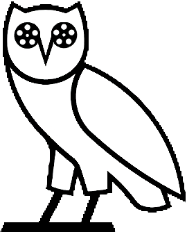

감독과 주연 배우를 넘어,
음악·촬영·무술 등 제작진의 숨결까지 분석하는 취향 발견

Voo-ong은 영화를 구성하는 수많은 제작진(Crew)의 데이터를 심층 분석하여
사용자가 미처 발견하지 못한 취향의 디테일(영상미, OST, 액션 스타일 등)을 찾아내는 추천 시스템입니다.
💡 Logo Concept
Voo-ong의 로고는 '지혜'의 상징인 부엉이와
영화 필름 릴을 결합하여 디자인되었습니다.
감독과 주연 배우뿐만 아니라, 음악, 촬영, 조명, 무술 감독 등 영화의 '결'을 만드는 숨은 주역들을 분석합니다.
단순 평점이 아닌, 영화 크레딧(Credit)의 방대한 인물 정보를 Hadoop 생태계로 수집 및 분산 처리합니다.
"나는 한스 짐머의 웅장함과 로저 디킨스의 색감을 좋아해"와 같은 구체적이고 섬세한 취향을 찾아냅니다.
Azure 클라우드 및 VirtualBox에 CentOS 7 환경 구성. SSH 보안 설정 및 네트워크 구성.
Hadoop 클러스터 구축 (Ambari, Cloudera Manager 활용). MySQL, Hive, Sqoop 연동을 통한 데이터 파이프라인 설계.
IMDb, MovieLens에서 Credit(제작진) 데이터 크롤링. 음악/촬영/무술 감독 등 주요 스태프 정보 정제 및 Tagging, One-hot Encoding 수행.
Multi-label Classification 모델 설계. SGD, Adam, Nadam 최적화 알고리즘 비교 분석 및 튜닝.
부족한 리소스와 짧은 기간에도 불구하고 유의미한 성과를 달성했습니다.
Adam Optimizer 기준 훈련/검증 정확도 약 86.8% 달성
2,800만 건의 데이터 분산 처리 및 학습 성공